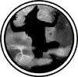

|

|
>> Содержание / Список кланов /
 CoU CoU
... С давних времен в мире всё было сообразно. Мудрецы говорят о древних временах, когда целые кланы правили миром, серые кланы. Они не в чем себе не отказывали, им не нужно было исполнять веления тёмного бога, и не нужно было стремиться ублажить Мироздателя. Они были вольны в своих поступках. Это были великие воины и настоящие герои, принимавшие на свое усмотрение сторону тьмы или света. Боги устрашились такой силы, это противоречило основам мироздания, никто не может быть волен в своих поступках, не приняв верования одной из сторон. И тогда было принято решение, сократить количество серых до возможного минимума. Целые кланы подверглись гонению и уничтожению. Те же, кто устоял, и смог бросить вызов сильным мира сего, были сосланы в подземелье. Навеки запечатано магическими рунами, подземелье похоронило в себе самых могущественных воинов и магов, которых объединяло стремление к гармонии, а не к войнам и власти. Прошли годы, жители подземелья передавали будущим поколениям давно утраченные знания и силу, которая не знает границ. Они хранили свое единство и пронесли его сквозь века, они выстояли…
Существует поверье, что через тысячу лет, печать подземелья ослабнет, и дрогнут врата. Дети великих серых воинов и магов выйдут на поверхность, и ничто не в состоянии будет их остановить. Они станут той силой, которая сможет бросить вызов тьме и свету…
… земля дрожала от заклинаний, воздух наполнялся звоном стали, и криками умиравших. Это была решающая битва. Более тысячи лет прошло с тех пор как война между светом и тьмой не знает конца. Она не знает конца, потому что она не знает начала. Таковы основы мироздания.
- В атаку! – металлическим голосом крикнул высокий воин, закованный в дорогие доспехи. В тот же миг за ним устремились сотни воинов, грудь которых украшал белый крест. Сам Мироздатель благословил их на эту битву.
Три дня силы орды в лице передовых тарманов сдерживали паладинов возле Демонса. Но силы света были ничтожны по сравнению с ордой. И тогда на помощь паладинам пришли нейтралы. Собрав всю мудрость, маги давали усиления воинам, те порождали бесчисленное количество клонов, казалось, война не закончится никогда. Казалось, мир не выдержит и рухнет в бездну хаоса…
Раздался оглушительный грохот, и наступила мертвая тишина, но вот мир вновь начал обретать звуки, раздавались стоны раненых, скрежет доспехов и грохот осыпающегося камня. И в этот момент врата древнего подземелья дрогнули, и само время на миг застыло. Взгляды противоборствующих сторон устремились на забытую пещеру, которая теперь ожила. В одно мгновенье забылись все распри, и в памяти всплыли те древние времена, когда на этом самом месте тысячу лет назад подобная битва положила конец великим серым. Сейчас врата подземелья открылись и оттуда вышли Дети подземелья. Дети древних героев, сумевшие сохранить ту мудрость и силу, за тысячу лет заключения приумножили всё достигнутое их отцами и теперь, согласно поверью, вышли на поверхность, дабы бросить вызов тем, кто ведет борьбу ради своих богов.
Никто не может точно сказать, что произошло тогда, но силы тьмы и света потерпели сокрушительное поражение от руки серых. Это заставило посмотреть на Детей подземелья как на равных противников, и кто знает, что последует в будущем…
Официальный сайт клана: http://www.cou.nm.ru
|
 |
|